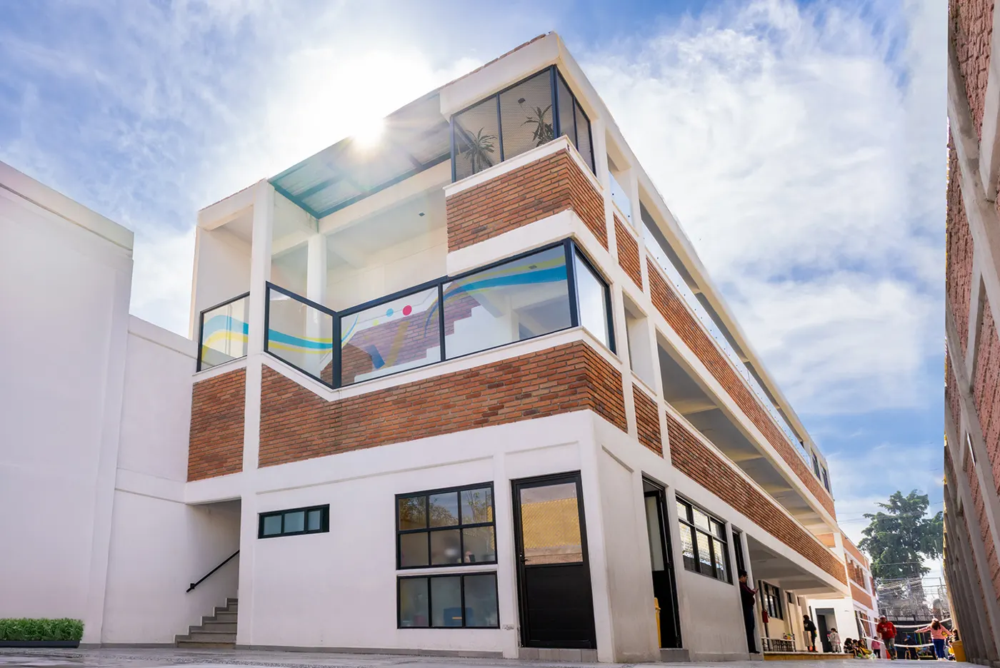
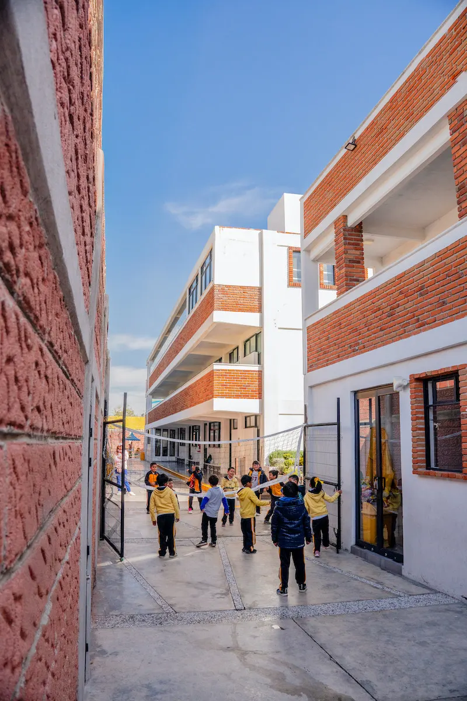
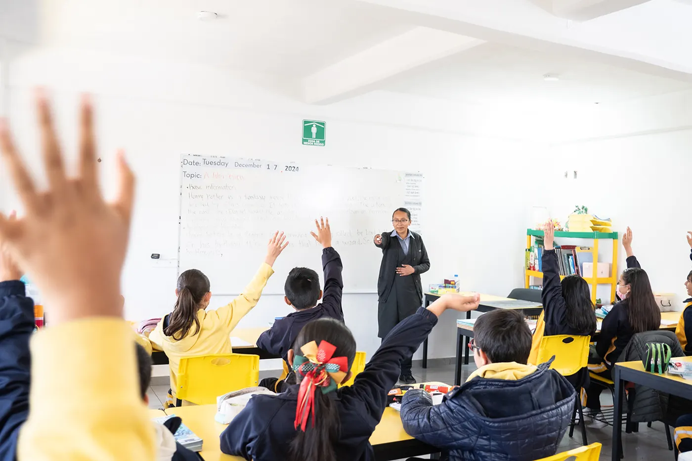
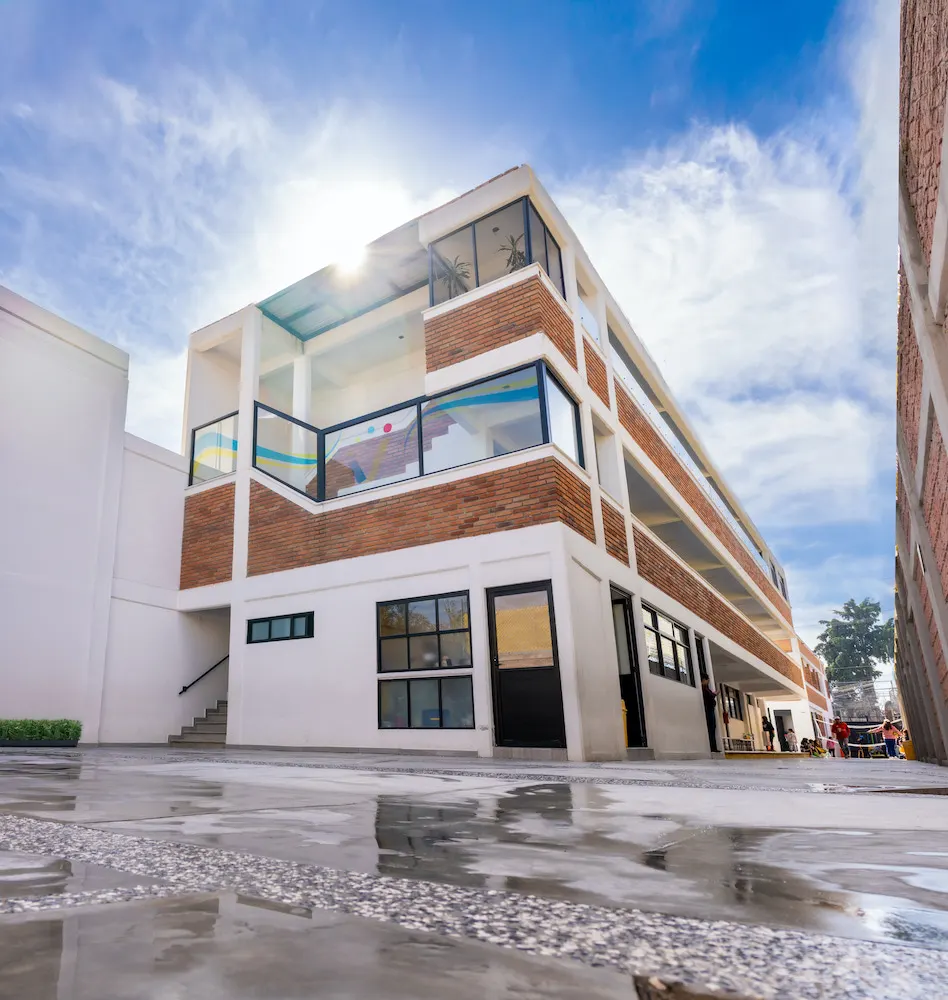
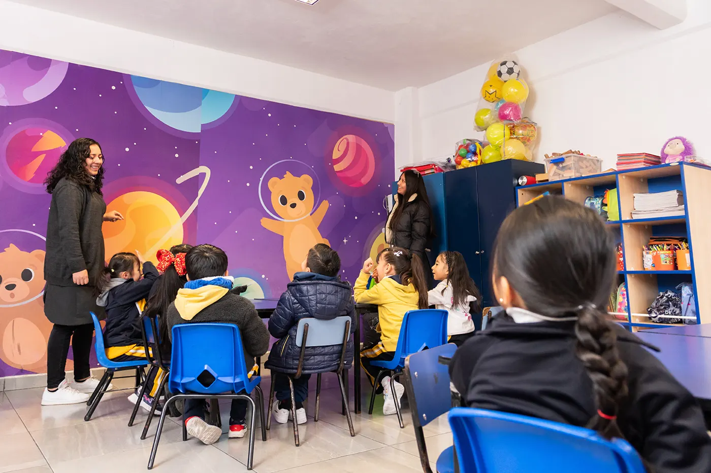
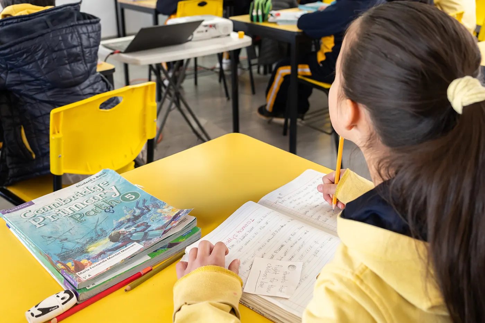
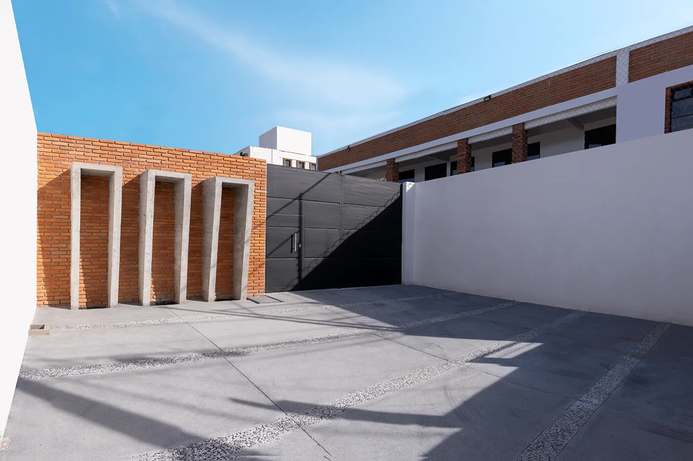
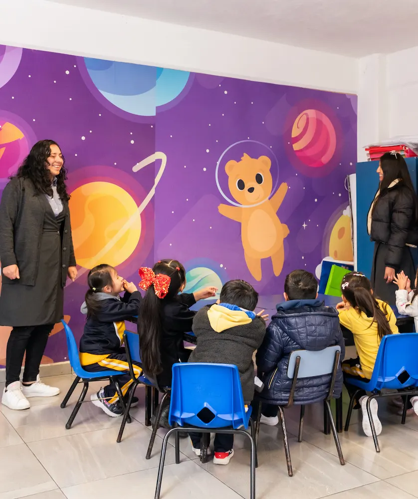

Misión
El Instituto Abrevajams es un Centro Educativo que tiene el compromiso de brindar una educación integral de calidad que atienda la diversidad y necesidades de todos los estudiantes que forman parte de nuestra comunidad.

Desde 2003 acompañamos a las familias de Toluca con educación de alto nivel académico, formación en valores y servicios que se adaptan a su día a día.
El Instituto Abrevajams es un Centro Educativo que tiene el compromiso de brindar una educación integral de calidad que atienda la diversidad y necesidades de todos los estudiantes que forman parte de nuestra comunidad.
Nuestro compromiso es brindar a nuestros estudiantes una educación de calidad que contribuya a su desarrollo como seres humanos autónomos, éticos, respetuosos, honestos y responsables. En nuestra comunidad escolar buscamos asegurar el bienestar integral de nuestros alumnos fomentando la convivencia armónica y una sólida formación en valores.
Nos une el deseo de responder a las necesidades familiares y laborales, garantizando bienestar y seguridad para sus hijos a través de nuestros servicios.

El Instituto Abrevajams es un Centro Educativo que tiene el compromiso de brindar una educación integral de calidad que atienda la diversidad y necesidades de todos los estudiantes que forman parte de nuestra comunidad.
Formar seres humanos autónomos, éticos, respetuosos, honestos y responsables, asegurando el bienestar integral de nuestros alumnos a través de la convivencia armónica y una sólida formación en valores.
Creamos un ambiente donde los niños y sus padres se sienten parte de una gran familia, apoyándose y cuidándose mutuamente.
Enseñamos a los niños a ser sinceros y transparentes en sus acciones y palabras, construyendo relaciones de confianza.
Motivamos a los niños a dedicarse a sus estudios y actividades con responsabilidad y esfuerzo.
Metodologías actualizadas desde temprana edad y un equipo docente en capacitación constante, buscando la innovación en su práctica.
Los alumnos conectan los campos formativos y se vuelven agentes activos de su aprendizaje al resolver problemas reales con sus compañeros.
Cercanía con madres, padres y tutores a través de diversos canales, con acompañamiento de docentes, personal administrativo y directivos.
Programas de historia, geografía y danza folclórica que desarrollan en los estudiantes un sentido de identidad y pertenencia.
Visitas escolares, campamentos, viajes internacionales y concursos académicos que desafían a nuestros alumnos.
Servicios que se adaptan a las necesidades familiares, en un ambiente seguro donde tus hijos siguen aprendiendo después de clases.
Reconocemos que cada alumno aprende de manera única, por eso diseñamos experiencias que promueven la participación activa, la exploración significativa y el desarrollo de habilidades.
Permite a los alumnos aprender de manera activa, significativa y colaborativa, desarrollando habilidades para la vida real.
Integra ciencia, tecnología, ingeniería, arte y matemáticas para fomentar el pensamiento crítico, la creatividad y la resolución de problemas en contextos reales.
Vincula el trabajo académico con la participación en proyectos comunitarios, fortaleciendo el compromiso social y el aprendizaje significativo.
El alumno resuelve un problema auténtico a partir de la investigación, el análisis y la toma de decisiones, desarrollando indagación, argumentación y autonomía.

Cuidamos la personalidad e individualidad de cada alumno: validamos sus emociones y brindamos un ambiente seguro para expresarse.
Trabajamos con plataformas y programas como CONVIVE y la Comisión de Derechos Humanos del Estado de México (CDHEM) para establecer una cultura escolar empática, pacífica, inclusiva y armoniosa.
El acompañamiento es cercano: docentes, personal administrativo y directivos dan seguimiento a cada alumno y mantienen comunicación constante con las familias.





“Excelente calidad humana de todo el personal y alto nivel académico.”
“¡La calidad humana de los docentes, siempre apoyando a las mamás que trabajan!”
“Feliz con el trato, pero sobre todo con el método de aprendizaje que llevan.”
“Excelente escuela, sin duda muy recomendable. El trato para los alumnos es excelente.”
Agenda un recorrido por nuestras instalaciones, conoce a nuestro equipo y resuelve todas tus dudas sobre el proceso de inscripción.